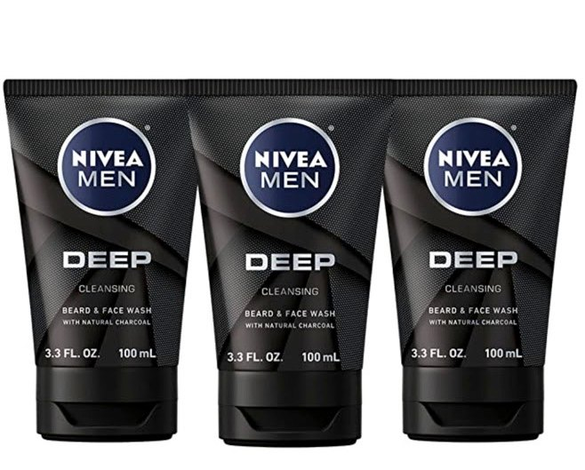

Every men also need to use skincare and schedule their routine daily. Its maybe common to women but today many of skincare products are related and made just for men use


The term facewash and cleanser refers to a product that cleans or removes dirt or other substances. A cleanser could be a detergent, and there are many types of cleansers that are produced with a specific objective or focus
| Face wash | Cleanser |
|---|---|
| a face wash is made to clean your pores more deeply. The texture is often foamy or will lather into a foam when applied to your damp skin | A face cleanser is made to purify, hydrate, and soothe your skin. The texture will be creamy, milky, gel-like, or even watery |
a cosmetic preparation used for protecting, moisturizing, and lubricating the skin. These functions are normally performed by sebum produced by healthy skin

| Benefits | How it works? |
|---|---|
| Using suitable moisturize will boost hydration in your skin, prevents flaking and dullness, and creates a protective layer of moisture that lasts all day | Moisturizers rehydrate the top layer of skin cells and seal in water. It is one of the best ways to treat dry skin. |
Serum is the fluid and solute component of blood which does not play a role in clotting. It may be defined as blood plasma without the clotting factors, or as blood with all cells and clotting factors removed
"Antioxidant serums help protect your skin from the free radicals you're exposed to on a daily basis".